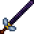

Хранитель пчел
Хранитель пчёл, он же Пчеловод (Bee Keeper) — уникальный меч, добавленный в версии 1.2. Выпадает с королевы пчел с шансом 33,3%.
При ударе призывает 1-3/1-4 пчелы, наносящих 12 ед урона, и с 90% шансом накладывает на врага дебафф "Ошеломление". Под водой пчёл не выпускает. При ударе по Манекену-мишени пчёлы не появляются.
Хранитель пчел

Характеристики
Тип Оружие Меч
Урон 30

Скорость 20 (Очень быстрая)
Атак/сек 3
Крит. шанс 4%
Отбрасывание 5.3 (Среднее)
Редкость Оранжевая
Продажа 54

Лучшая модификация Легендарный
Кол-во исследований 1 исследование
Примечания
Пчёлы, призванные Хранителем пчел, наносят 8-9 / 9-11 урона, при этом обычные пчелы могут нанести 1 единицу дополнительного урона, а с Рюкзаком-ульем - от 1 до 4 единиц. Рюкзак-улей также даёт дополнительный 33%-й шанс призвать дополнительную пчелу.
Пчёлы могут многократно пробивать врагов и многократно атаковать одну и ту же цель.
Пчёлы могут быть уничтожены, если попадут в жидкость или твёрдый блок.
Каждый раз, когда пчелы отскакивают от стены или попадают в жидкость, они теряют одно очко пробития.
Эффект повышения пробития брони (от Ожерелья из акульих зубов и Точильного камня ) также увеличивает урон, наносимый призванными пчёлами.
Советы
Использование Хранителя пчёл на Пожирателе Миров высвободит много пчел, если тот будет двигаться прямо через место удара меча.
Хранитель пчёл может быть полезен даже в Хардмод-режиме из-за его способности вызывать Ошеломление и наносить приличный урон одновременно.
Пчелы очень полезны для контроля толпы, так как они могут не только уничтожать врагов, поврежденных мечом, но и ранить или убивать любых других поблизости.